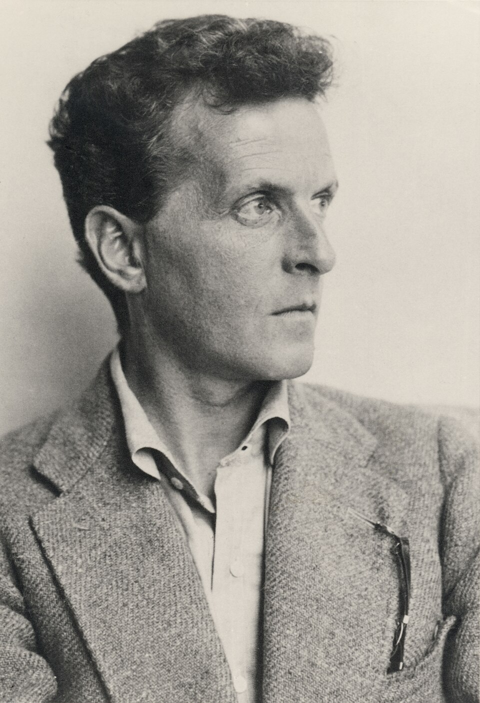
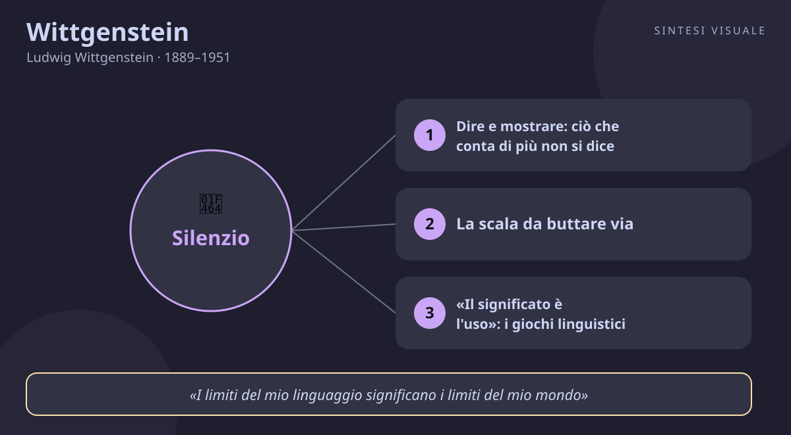

Home / Filosofi / Wittgenstein

Wittgenstein
Ludwig Wittgenstein · 1889–1951
«Su ciò di cui non si può parlare, si deve tacere»
- Dire e mostrare
- Giochi linguistici
- Significato è uso
- Terapia
💬La massima
«Su ciò di cui non si può parlare, si deve tacere.»
— Tractatus logico-philosophicus, proposizione 7 (l'ultima), 1921 (in tedesco: «Wovon man nicht sprechen kann, darüber muß man schweigen»)
È la frase con cui si chiude l'unico libro di filosofia pubblicato in vita da Wittgenstein, e va capita insieme alla prima riga dell'opera: «Il mondo è tutto ciò che accade». Secondo il giovane Wittgenstein, il linguaggio funziona come un'immagine dei fatti: una proposizione ha senso solo se descrive uno stato di cose che può accadere oppure no («piove», «il treno è in ritardo»). Tutto ciò che davvero conta — l'etica, il senso della vita, il bello, Dio, persino il mistero che il mondo esista — sta fuori dai fatti, e quindi non si può dire: si può solo mostrare. Farneticare su questi temi con frasi che sembrano profonde ma non descrivono nulla («l'Assoluto è lo Spirito che ritorna a sé») non è saggezza, è chiacchiera travestita da pensiero. Il silenzio finale non è rassegnazione, ma rispetto: tacere davanti all'indicibile è l'atto più onesto e, in fondo, più religioso del filosofo. E vale anche per noi: quante discussioni — al lavoro, in famiglia, sui social — consistono nel pretendere di dire con precisione ciò che parole precise non possono contenere? Riconoscere il limite del dicibile è già una forma di chiarezza, e il silenzio, al momento giusto, dice più di mille opinioni.
👤Biografia
Ludwig Josef Johann Wittgenstein nasce a Vienna il 26 aprile 1889, ultimo di otto figli di Karl Wittgenstein, magnate dell'acciaio e uno degli uomini più ricchi dell'impero, e di Leopoldine Kalmus. È una famiglia di geni e di abissi: in casa si suonano Brahms e Mahler, il fratello Paul diventerà il celebre pianista con un braccio solo (perse il destro in guerra), ma tre fratelli — Hans, Rudolf e Kurt — si tolgono la vita. Ludwig cresce brillante, inquieto, ossessionato dall'onestà verso se stesso fino alla crudeltà.
Studia ingegneria aeronautica a Manchester, ma i fondamenti della matematica lo divorano: nel 1911 bussa alla porta di Bertrand Russell a Cambridge e non se ne va più. Russell annota: testardo, perverso, forse un genio. Allo scoppio della guerra si arruola volontario nell'esercito austro-ungarico, porta con sé il Vangelo in breve di Tolstoj e scrive in trincea e in prigionia (a Como, nel 1918-1919) il Tractatus. Nel 1919 regala l'intera fortuna ai fratelli e alle sorelle e va a fare il maestro elementare nei villaggi poveri della Bassa Austria — Trattenbach, Puchberg, Otterthal — dove litiga con compaesani e scolari e compila un dizionario ortografico per le scuole (1926). Fa poi il giardiniere in un monastero e progetta da architetto, con Paul Engelmann, la severa casa modernista della sorella Margarete a Vienna.
Nel 1929 torna a Cambridge: la tesi di dottorato è il Tractatus già pubblicato, esaminatori Russell e Moore. Diventa fellow del Trinity College (1930) e professore di filosofia (1939-1947), detta quaderni leggendari (il Libro blu e il Libro marrone), trascorre lunghi ritiri in una capanna in Norvegia, a Skjolden. Durante la seconda guerra mondiale lavora come inserviente e tecnico di farmacia negli ospedali di Londra e Newcastle. Muore di cancro alla prostata a Cambridge il 29 aprile 1951, a 62 anni; le sue ultime parole, riportate dal medico: «Dite loro che ho avuto una vita meravigliosa». Asceta tormentato, generoso in segreto, amante dei gialli, dei western e di Schubert: un uomo che visse come pensò — senza una parola di troppo.
📌Sintesi del pensiero
Ci sono due Wittgenstein in un solo uomo. Il primo, quello del Tractatus (1921), sostiene che il linguaggio rispecchia i fatti del mondo e che tutto il resto — etica, senso della vita, mistico — non si può dire ma solo mostrare, nel silenzio. Il secondo, quello delle Ricerche filosofiche (postume, 1953), rovescia il tavolo: il linguaggio non è un unico specchio, ma una cassetta di attrezzi; il significato di una parola è il suo uso nei giochi linguistici della vita quotidiana. Un unico filo lega le due stagioni: la filosofia non spiega il mondo, ma dissolve le confusioni create dal linguaggio; il suo compito è terapeutico, riportare le parole dal loro uso tormentato a quello chiaro e condiviso.
🏛️I temi fondamentali
- Dire e mostrare: ciò che conta di più non si dice. Nel Tractatus, Wittgenstein traccia un confine: le proposizioni sensate descrivono fatti («la porta è chiusa»), mentre l'etica, l'estetica e il senso del mondo non sono fatti e quindi non si lasciano dire. Eppure esistono — anzi, sono ciò che dà valore alla vita — e si mostrano: nell'azione buona, nell'opera bella, nello stupore che il mondo esista. Esempio concreto: nessun discorso funebre riesce a «dire» l'amore per una persona perduta; lo mostra invece il gesto di chi accorre, resta, aiuta in silenzio. Pretendere di catturare tutto a parole è l'errore; riconoscere che qualcosa si mostra senza dirsi è l'inizio della saggezza.
- La scala da buttare via. Alla proposizione 6.54 Wittgenstein confessa che le frasi del suo stesso libro, a rigore, sono insensate: servono come i pioli di una scala, per salire oltre di esse, e poi vanno gettate. È un gesto di onestà intellettuale rarissimo: usare le parole per mostrare i loro limiti, poi tacere. Esempio concreto: una buona terapia, un buon corso di formazione, un buon mentore funzionano così — ti danno impalcature per salire e poi le smontano, perché alla fine devi camminare da solo, senza stampelle verbali.
- «Il significato è l'uso»: i giochi linguistici. Nelle Ricerche, il filosofo maturo abbandona l'idea di un unico linguaggio-specchio: parlare è come giocare — ci sono infinite partite (ordinare, pregare, scherzare, negoziare, consolare), ciascuna con le sue regole, e il significato di una parola è il suo uso nel gioco (Ricerche, §43). Non esiste l'essenza nascosta della parola «gioco» o «libertà»: esiste la rete di usi concreti, le somiglianze di famiglia (§§65-67). Esempio concreto: al lavoro, litigare in astratto su «professionalità» non porta da nessuna parte; chiedere «fammi un esempio di comportamento professionale qui, oggi» dissolve il nebbione e riporta la parola al suo uso reale.
- Niente linguaggio privato: il coleottero nella scatola. Contro l'idea che il significato nasca nella mente di ciascuno, Wittgenstein argomenta che un linguaggio comprensibile a uno solo è impossibile (Ricerche, §§243-315). La sua immagine: ognuno ha una scatola con dentro «un coleottero» che nessun altro può vedere — ma allora la parola «coleottero» non ha alcun uso comune, e potrebbe non esserci nulla nella scatola (§293). Anche il dolore, la più intima delle esperienze, ha senso perché impariamo in pubblico a esprimerlo: il pianto del bambino, la smorfia, la parola «male». Esempio concreto: il collega che dice «sto bene» con gli occhi lucidi non sta usando un codice privato indecifrabile; il suo corpo mostra ciò che la bocca tace, e un buon capo — come un buon amico — sa leggere quel mostrarsi meglio di tante parole.
- La filosofia come terapia, non come teoria. «La filosofia è una battaglia contro l'incantamento del nostro intelletto per mezzo del linguaggio» (§109): i problemi filosofici non si risolvono con nuove teorie, ma si dissolvono guardando come usiamo davvero le parole. Il filosofo «tratta una questione come una malattia» (§255): scioglie i nodi, non tira la corda. Esempio concreto: le discussioni infinite — sul libero arbitrio a cena, sulla «vera» leadership in azienda — spesso nascono da parole usate fuori dal loro gioco naturale; riportarle agli esempi concreti fa svanire il problema, come svanisce un crampo quando si cambia posizione.
📚Le opere principali
- Tractatus logico-philosophicus, 1921. Sette proposizioni numerate, dalla teoria dell'immagine del linguaggio («il mondo è tutto ciò che accade») al silenzio finale su etica e mistico. Tesi centrale: il linguaggio sensato descrive fatti; il resto si mostra ma non si dice. Conta perché fondò l'analisi logica del linguaggio e divenne la bibbia — e il bersaglio — del Circolo di Vienna: il libro più breve e più influente della filosofia del Novecento.
- Ricerche filosofiche (Philosophische Untersuchungen), postuma 1953. Appunti e frammenti degli anni 1936-1949, pubblicati dall'allieva Anscombe. Tesi centrale: il significato è l'uso nei giochi linguistici; niente essenze, niente linguaggio privato, la filosofia è terapia delle confusioni verbali. Conta perché è il testo fondatore della filosofia del linguaggio ordinario e resta il banco di prova di ogni dibattito su mente, intelligenza artificiale e comunicazione.
- Della certezza (Über Gewissheit), postuma 1969. Ultimi quaderni (1949-1951), scritti contro il dubbio radicale: alcune certezze — «ho due mani», «il mondo esiste da tempo» — non sono conclusioni ma cardini su cui gira ogni dubbio; dubitare di tutto è impossibile perché il dubbio stesso ha bisogno di uno sfondo saldo. Conta perché risponde allo scetticismo senza dogmi e mostra l'ultimo Wittgenstein alle prese con le fondamenta della conoscenza.
💬Massime celebri
«I limiti del mio linguaggio significano i limiti del mio mondo» — Tractatus, 5.6, 1921. Conta perché rovescia il rapporto con le parole: imparare nuove parole e nuovi usi non è decorazione, è allargare il mondo in cui vivi — vale per chi studia, per chi vende, per chi parla in pubblico.
«Per una grande classe di casi — benché non per tutti — in cui impieghiamo la parola “significato”, si può definire così: il significato di una parola è il suo uso nel linguaggio» — Ricerche filosofiche, §43 (postuma, 1953). Conta perché smaschera ogni discorso fumoso: se vuoi sapere cosa significa una parola, non cercare l'essenza — guarda come viene usata davvero.
«La filosofia è una battaglia contro l'incantamento del nostro intelletto per mezzo del linguaggio» — Ricerche filosofiche, §109 (postuma, 1953). Conta perché definisce il mestiere del pensare: non accumulare teorie, ma liberarsi dagli incantesimi delle parole — una lezione preziosa davanti a slogan, gergo aziendale e frasi fatte.
⌛Contesto storico
Ludwig Wittgenstein nasce a Vienna nel 1889, nel cuore della Vienna fin-de-siècle: la capitale di Francesco Giuseppe dove Mahler dirige l'Opera, Klimt dipinge, Freud inventa la psicanalisi e Karl Kraus fustiga la stampa corrotta. È l'anno del suicidio di Mayerling del principe Rodolfo: l'impero asburgico, all'apice dello splendore, porta già dentro il proprio tramonto. Il giovane Ludwig cresce tra musica, ricchezza immensa e un'ombra di morte — tre fratelli suicidi — che segnerà per sempre il suo rapporto tormentato con la vita.
Attorno a lui il mondo crolla e rinasce due volte. La prima guerra mondiale spazza via gli imperi: Wittgenstein la combatte sul fronte orientale e in Italia, e proprio lì scrive il Tractatus. Gli anni Venti e Trenta vedono la Vienna Rossa, il Circolo di Vienna di Schlick e Carnap (che lo corteggia e da lui viene respinto: i positivisti avevano capito il libro a metà), la crisi del 1929 e l'ascesa del nazismo. La famiglia, di origine ebraica, tratta con la Reichsbank dopo l'Anschluss del 1938 per mettere in salvo beni e persone. La seconda guerra mondiale lo trova in Inghilterra, inserviente negli ospedali di Londra e Newcastle mentre Cambridge discute le sue lezioni.
I movimenti che lo formano sono la logica di Frege e Russell, la fisica di Hertz e Boltzmann, Schopenhauer letto da ragazzo, Tolstoj (il Vangelo in breve portato in trincea), Kierkegaard e William James. I movimenti che lui genera, spesso a sua insaputa o contro la sua volontà, sono il positivismo logico del Circolo di Vienna, la filosofia del linguaggio ordinario di Oxford (Ryle, Austin), e una lunga scia che arriva fino a Kripke, Cavell, Putnam e ai dibattiti odierni su mente e intelligenza artificiale.
🌊L'eredità
Pochi filosofi hanno cambiato il pensiero del Novecento due volte. La prima con il Tractatus: il Circolo di Vienna — Schlick, Carnap, Neurath — lo adottò come manifesto, anche se Wittgenstein rifiutò la loro lettura («non hanno capito una riga», sbottò), perché per lui l'indicibile contava più del dicibile. La seconda con le Ricerche, pubblicate postume dall'allieva Elizabeth Anscombe: a Oxford nacque la scuola del linguaggio ordinario — Ryle, Austin, Strawson — che imparò a dissolvere i problemi filosofici guardando agli usi reali delle parole. Negli anni Ottanta, Saul Kripke fece del paradosso delle regole un caso mondiale; Stanley Cavell ne trasse una filosofia del cinema e della conversazione; Cora Diamond e Peter Hacker divisero gli interpreti in due chiese rivali. Ma l'eredità esce dalle aule: la pragmatica dei linguisti, le terapie che lavorano sul «come parli» e non sul «cosa sei», i critici dell'intelligenza artificiale che citano i giochi linguistici per spiegare perché una macchina che combina parole non abita ancora nessuna forma di vita. Persino l'architettura conserva una sua opera: la spoglia Haus Wittgenstein a Vienna. Il miliardario che regalò tutto e tacque sull'essenziale continua a insegnare una sola lezione: la chiarezza è una forma di onestà.
🌍Esempi di oggi
- La riunione dove tutti parlano e nessuno decide. In call, sei persone ripetono opinioni su «la visione» e «l'approccio strategico» senza che nessuna frase descriva un fatto né una scelta. Wittgenstein spegnerebbe il microfono delle astrazioni: finché le parole non atterrano su fatti («chi fa cosa entro venerdì»), si sta facendo rumore, non pensiero — e un minuto di silenzio onesto vale più di mezz'ora di gergo.
- Il litigio sulla parola magica. Due colleghi litigano su «rispetto»: uno lo identifica con la puntualità, l'altro con il tono di voce. La lezione del §43 è chirurgica: smetti di cercare l'essenza del «rispetto» e chiedi gli usi — «dimmi un episodio concreto in cui ti sei sentito rispettato o no». Il conflitto astratto si dissolve e resta un problema pratico, risolvibile.
- Il «sto bene» detto con gli occhi lucidi. Un'amica, un figlio, un collaboratore dice che va tutto bene, ma la voce trema e lo sguardo sfugge. Contro il mito che le emozioni siano un diario privato illeggibile, Wittgenstein ricorda che il dolore si impara a esprimere in pubblico e in pubblico si mostra: prestare attenzione a ciò che si mostra — senza interrogatori né sentenze — è la forma più alta di comprensione, quella che nessuna chat saprà mai automatizzare.
📄
# Ludwig Wittgenstein — «Su ciò di cui non si può parlare, si deve tacere»
Buongiorno! Oggi incontriamo il genio più enigmatico del Novecento: l'erede miliardario che regalò via tutto e andò a insegnare ai contadini, il soldato che scrisse un capolavoro in trincea, il professore di Cambridge che considerava i suoi stessi libri una scala da buttare via dopo averla salita. Il ritratto qui sopra — la fotografia del 1930 di Moritz Nähr, conservata alla Biblioteca Nazionale Austriaca — lo mostra a 41 anni, da poco tornato a Cambridge, con quello sguardo tagliente e tormentato di chi non accetta una sola parola di troppo.
🧠Quiz
Metti alla prova quello che hai letto — rispondi in chat con es. 1B 2A 3C 4D 5A (usa «-» per le risposte che salti):
1 Da quale opera è tratta la massima di oggi, e che posto occupa?
2 Che cosa distingue, nel primo Wittgenstein, «dire» e «mostrare»?
3 Che cosa significa «il significato di una parola è il suo uso nel linguaggio»?
4 Qual è il punto dell'immagine del «coleottero nella scatola» (Ricerche, §293)?
5 Dopo la prima guerra mondiale, che cosa fece Wittgenstein della sua immensa eredità?
✅Soluzioni — tocca per vedere
1B – 2B – 3C – 4B – 5C
🔁Ripasso
- Dire/mostrare e proposizione 7: se hai sbagliato la 1 o la 2, ricorda il confine del Tractatus: i fatti si dicono, i valori si mostrano; il silenzio finale è rispetto, non resa.
- Significato è uso: se hai sbagliato la 3, ricorda la cassetta degli attrezzi e le somiglianze di famiglia (§§43, 65-67): niente essenze, solo usi concreti nei giochi linguistici.
- Linguaggio privato: se hai sbagliato la 4, ricorda la scatola col coleottero (§293): senza controllo pubblico non ci sono regole, e senza regole non c'è significato — nemmeno per il dolore.
🖼️In un colpo d’occhio

Tocca l’immagine per ingrandirla.